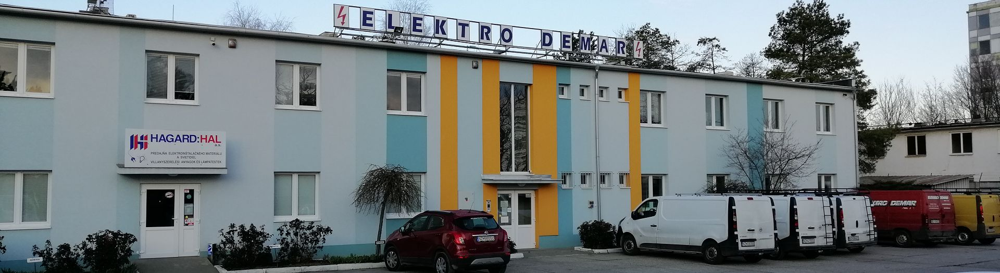
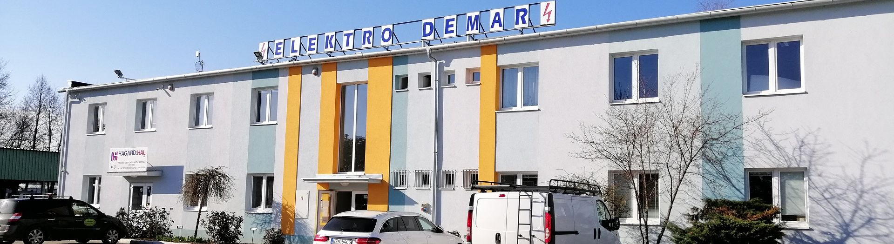
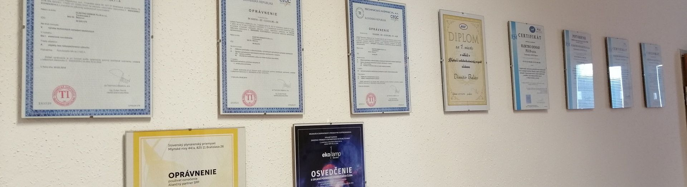
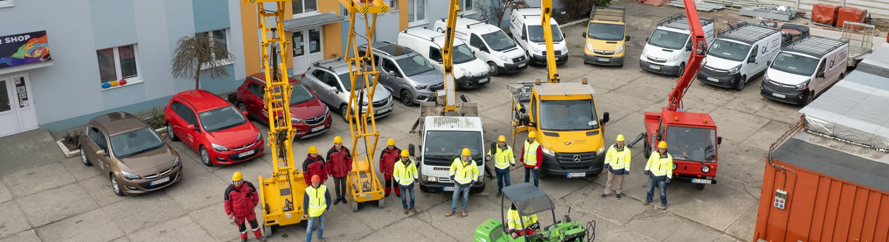

36 rokov sme stabilným partnerom v oblasti komplexných dodávok a služieb elektroinštalácií pre zvyšovanie bezpečnosti, kvality a úspor priemyselných, administratívnych a občianskych objektov.
Medzi naše komplexné služby patria okrem iného slaboprúdové a silnoprúdové rozvody, elektrické NN a VN prípojky, dodávka a montáž trafostaníc, uzemnenia a bleskozvody.


Produkty profesionálnej značky Würth
Miešanie farieb značky Poli-Farbe. Kompletný sortiment nielen pre profesionálov.

Pošlite nám stručný popis objektu a toho, čo potrebujete. Pripravíme predbežnú cenovú ponuku.
Napísať e-mailIČO 44602570 · DIČ 2022752424 · IČ DPH SK2022752424